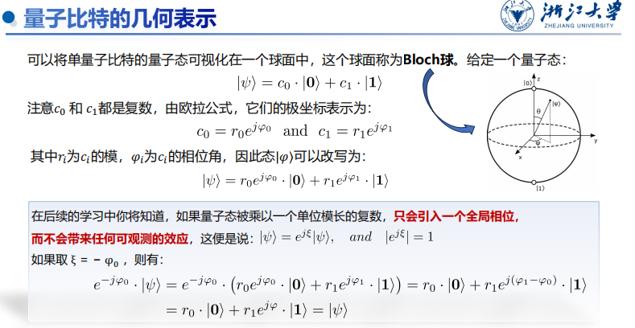
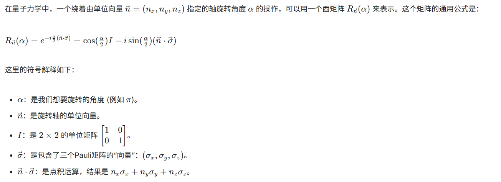
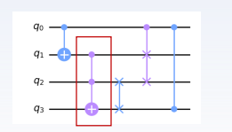
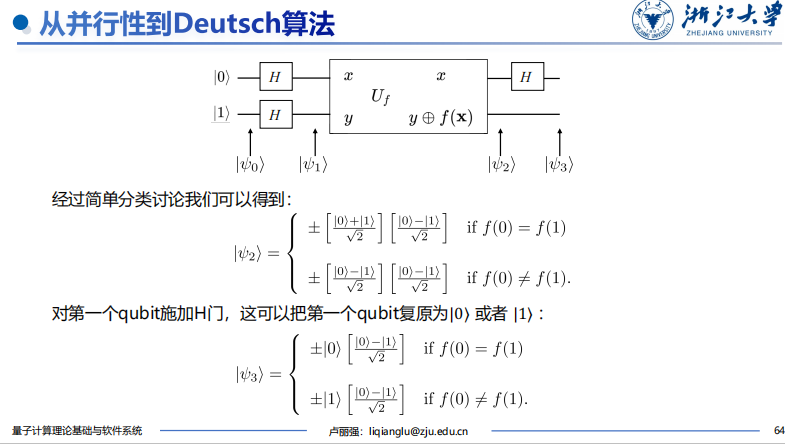

量子比特与量子门¶
1. 量子比特¶
量子术语与线性代数术语对照¶
| 量子力学术语 | 线性代数术语 |
|---|---|
| 态矢量 (State Vector) | 向量 (Vector) |
| 本征态 (Eigenstate) | 特征向量 (Eigenvector) |
| 本征值 (Eigenvalue) | 特征值 (Eigenvalue) |
| 右矢 (ket) \(\|a \rangle\) | 列向量 (Column Vector) |
| 左矢 (bra) \(\langle a\|\) | 行向量 (Row Vector) |
| \(\langle a\|b\rangle\) | \(a\) 和 \(b\) 向量的内积 (Inner Product) |
| \(\|a\rangle\langle b\|\) | \(a\) 和 \(b\) 的外积构成的投影矩阵 |
| 基态 (Ground State) | 最小本征态 (Eigenstate with Lowest Eigenvalue) |
| 算符 (Operator) | 矩阵 (Matrix) |
| 线性算符 (Linear Operator) | 线性变换 (Linear Transformation) |
| 幺正 (酉) 算符 (Unitary Operator) | 正交矩阵 (Orthogonal Matrix) |
| 厄米矩阵 (Hermitian Matrix) | 自伴矩阵 (Self-adjoint Matrix) |
| 线性叠加原理 (Principle of Superposition) | 线性组合性质 (Linearity) |
| 投影算符 (Projection Operator) | 投影矩阵 (Projection Matrix) |
幺正矩阵与厄米矩阵
- 正交矩阵 (实数): \(AA^T = I\)
- 幺正矩阵 (复数): \(UU^\dagger = I\) (其中 \(\dagger\) 是共轭转置)
- 在量子计算中至关重要，因其性质保证了量子态经过幺正算子后仍是一个有效的量子态。
- 厄米矩阵 (复数): \(H = H^\dagger\)
- 其性质保证了本征值是实数，本征向量是正交的，这确保了量子系统的物理量是可观测的。
量子比特的物理实现¶
- 叠加特性: 电子自旋叠加、能量态叠加等物理过程的抽象就是量子比特的叠加特性。
- 电子自旋向上和自旋向下存在叠加。
- 原子的基态和激发态也存在叠加。
- 经典微电子电路的CMOS开关的开闭承载了1比特的信息。
DiVincenzo 判据 (量子计算机实现条件)¶
- 具有可操控的量子比特，并具有可扩充性（可调控的二能级系统）。
- 能够将量子比特的状态初始化为简单基准状态（设置 \(|0\rangle\) 态或 \(|1\rangle\) 态）。
- 具有长相关退相干时间（确保充足的时间有效完成计算任务）。
- 具有一组“通用”量子门（确保能够满足所有的计算任务需求）。
- 能够测量特定量子比特（完成量子信息到经典信息的转换）。
量子态基本概念¶
- 量子叠加态 (Superposition): 量子比特 (Qubits) 可以同时代表1和0的多种可能性组合。研究人员使用精密激光或微波束操纵，使量子比特处于叠加态。
- 量子纠缠态 (Entanglement): 一对量子比特对的两个量子比特存在于单个量子状态。改变其中一个量子比特的状态时，另一个量子比特的状态会瞬间改变。
量子比特的叠加态¶
- 量子比特: 存在两个可能的状态 \(|0\rangle\) 和 \(|1\rangle\)。与经典比特不同，量子比特可以处于 \(|0\rangle\) 和 \(|1\rangle\) 以外的状态，是状态的线性组合，称为叠加态。
- 表示: \(|\psi\rangle = \alpha|0\rangle + \beta|1\rangle\)
- \(\alpha\) 和 \(\beta\) 是复数 (振幅)，描述量子比特的叠加状态。
- \(|0\rangle\) 和 \(|1\rangle\) 是基矢态，构成二维复向量空间的正交基。
- 归一化条件: \(|\alpha|^2 + |\beta|^2 = 1\)
- 量子比特的状态是二维复向量空间中的单位向量。
- 向量各分量为复数，欧几里得范数为1。
量子比特的基矢态¶
- 除了 \(|0\rangle\) 和 \(|1\rangle\)，任意两个单位正交基都可以作为量子态的基矢态。
- 常用正交基:
- \(|+\rangle = \frac{1}{\sqrt{2}}(|0\rangle + |1\rangle)\)
- \(|-\rangle = \frac{1}{\sqrt{2}}(|0\rangle - |1\rangle)\)
- 任意量子态都可以表示为这组基的线性组合: \(|\psi\rangle = \alpha|+\rangle + \beta|-\rangle\)
量子比特的向量表示¶
- \(|0\rangle\) 和 \(|1\rangle\) 向量形式: \(|0\rangle = \begin{bmatrix} 1 \\ 0 \end{bmatrix}\), \(|1\rangle = \begin{bmatrix} 0 \\ 1 \end{bmatrix}\)
- \(|+\rangle\) 和 \(|-\rangle\) 向量形式: \(|+\rangle = \frac{1}{\sqrt{2}}\begin{bmatrix} 1 \\ 1 \end{bmatrix}\), \(|-\rangle = \frac{1}{\sqrt{2}}\begin{bmatrix} 1 \\ -1 \end{bmatrix}\)
- 任意量子态 \(|\psi\rangle = \alpha|0\rangle + \beta|1\rangle\) 向量形式: \(|\psi\rangle = \begin{bmatrix} \alpha \\ \beta \end{bmatrix}\)
量子态矢内积¶
- Bra-ket 表示法: \(| \psi \rangle\) 表示列向量，\(\langle \psi |\) 表示其共轭转置行向量 \(\begin{bmatrix} \alpha^* & \beta^* \end{bmatrix}\)。
- 内积: \(\langle \psi | \psi \rangle = \alpha^* \alpha + \beta^* \beta = 1\) (标量)
- 一般定义: \(\langle a|b \rangle = a_0^* b_0 + a_1^* b_1 + \dots + a_n^* b_n\)
- 正交: 两个向量的内积为0。
- 欧几里得范数: \(|||v\rangle|| = \sqrt{\langle v|v \rangle}\)
量子态的坍缩¶
- 当测量量子态时，会发生量子态的坍缩 (投影)。
- 对于 \(|\psi\rangle = \alpha|0\rangle + \beta|1\rangle\)，将以 \(|\alpha|^2\) 的概率得到 \(|0\rangle\) 态，以 \(|\beta|^2\) 的概率得到 \(|1\rangle\) 态。
- 归一化条件: \(|\alpha|^2 + |\beta|^2 = 1\)。
不可克隆原理 (Quantum No-Cloning Theorem)¶
- 核心思想: 不能创建一个完美的克隆 (拷贝) 任意未知的量子态。
- 数学表示: 不存在一个线性算符 \(U\)，可以将量子态 \(|\psi\rangle\) 映射到相应的复制态 \(|\psi\rangle|\psi\rangle\)。
- 意义: 无法通过制作副本对量子态进行重复测量。
量子比特的几何表示 (Bloch 球)¶
- 可视化: 单量子比特的量子态可以可视化在一个球面中，称为 Bloch 球。
- 表示: \(|\psi\rangle = \cos(\frac{\theta}{2})|0\rangle + e^{i\varphi} \sin(\frac{\theta}{2})|1\rangle\)
- \(\theta\) 和 \(\varphi\) 是球坐标下的分量，且量子态的欧几里得范数为1。
- 全局相位: 量子态乘以一个单位模长的复数，只会引入一个全局相位，不会带来任何可观测的效应。
- \(|\psi'\rangle = e^{i\xi}|\psi\rangle\) 与 \(|\psi\rangle\) 物理等价。
- 注意: Bloch 球只能可视化 单个量子比特 的状态。

小结: 量子信息的无限与有限¶
- 无限: 一个量子比特的状态可以是Bloch球上的任意一点，复系数可以无限拓展，理论上一个量子比特的信息容量足以存储下一本书！
- 有限: 量子力学的基本假设限定了量子比特被测量后便会坍缩，单次测量只能获取一比特的信息。只有在测量了无数多个“完全相同”的量子比特后，才能确定 \(\alpha\) 和 \(\beta\)。
- 隐含信息: 在一个量子比特的状态里，大自然隐藏了大量的“隐含信息”，这些信息会随着量子比特数的增长而指数增长。
2. 多量子比特¶
多量子比特叠加态¶
- 两个量子比特: 有四种基本状态 \(|00\rangle, |01\rangle, |10\rangle, |11\rangle\)。
- 叠加态: 可以是这些基本态的叠加: \(|\psi\rangle = \alpha_{00}|00\rangle + \alpha_{01}|01\rangle + \alpha_{10}|10\rangle + \alpha_{11}|11\rangle\)
- 测量: 测量量子系统，以 \(|\alpha_x|^2\) 的概率得到 \(|x\rangle\) 态。
- 归一化: \(\sum_{x \in \{0,1\}^2} |\alpha_x|^2 = 1\)。
- 局部测量与坍缩: 测量其中低位量子比特得到0，则状态坍缩并归一化。
- N个量子比特: \(2^N\) 种基本状态。
张量积 (Tensor Product / Kronecker Product)¶
- 定义: 用于组合向量空间的运算，将两个向量空间的向量合并成一个更大的向量空间。
- 表示: \(V \otimes W\)。结果是一个新的向量空间，其维度等于 \(V\) 和 \(W\) 的维度的乘积。
-
示例:
- 向量表示: \(\begin{bmatrix} \alpha \\ \beta \end{bmatrix} \otimes \begin{bmatrix} \gamma \\ \delta \end{bmatrix} = \begin{bmatrix} \alpha\gamma \\ \alpha\delta \\ \beta\gamma \\ \beta\delta \end{bmatrix}\)
- 作用: 获得多个量子态的复合量子态，提供多量子比特的数学表示方法。
判断是否纠缠¶
- 无关/可分态: 如果一个多量子比特系统可以分解为多个单量子比特的张量积。
- 例如: \(\frac{1}{2}(|00\rangle + |01\rangle - |10\rangle - |11\rangle) = \frac{1}{\sqrt{2}}(|0\rangle - |1\rangle) \otimes \frac{1}{\sqrt{2}}(|0\rangle + |1\rangle)\)
- 这意味着第二个比特的状态与第一个比特无关。
- 不可分/纠缠态: 如果无法分解成多个单量子比特的张量积。
- 例如: \(\frac{1}{\sqrt{2}}(|00\rangle + |11\rangle)\)
- 第一个比特测得0，第二个比特一定为0；第一个比特测得1，第二个比特一定为1。
复合系统与多比特门¶
- 编号与绘制: 态矢量中的每个量子比特按从左到右顺序编号，并在量子电路图中从上至下绘制。
- 多比特门: 若将两个单量子门视作一个整体，可以通过张量积的形式构成一个双量子门。
量子优势案例¶
- 量子计算机可以通过同时尝试所有可能的“钥匙”来一次性解决问题 (如开锁)，而经典计算机需要依次尝试。
- 这种优势源于量子叠加态和量子纠缠态的特性。
贝尔态 (Bell States)¶
- 定义: 双量子比特系统中重要的纠缠态。
- 四种贝尔态:
- \(|\phi^+\rangle = \frac{1}{\sqrt{2}}(|00\rangle + |11\rangle)\)
- \(|\phi^-\rangle = \frac{1}{\sqrt{2}}(|00\rangle - |11\rangle)\)
- \(|\psi^+\rangle = \frac{1}{\sqrt{2}}(|01\rangle + |10\rangle)\)
- \(|\psi^-\rangle = \frac{1}{\sqrt{2}}(|01\rangle - |10\rangle)\)
- 贝尔基: 这四个贝尔态构成一个基底，任何双量子比特的量子态都可以表示为它们的线性组合。
3. 单量子门¶
引入: 量子非门 (Pauli-X 门)¶
- 经典X门 (NOT门): 翻转电平信号 (0态和1态交换)。
- 量子X门: 作用是线性的，实现 \(|0\rangle \rightarrow |1\rangle\) 的转变，互换复系数。
- 矩阵表示: \(X = \begin{bmatrix} 0 & 1 \\ 1 & 0 \end{bmatrix}\)
- 结论: 单量子比特的量子门可以由 \(2 \times 2\) 的矩阵给出，其矩阵分量决定了量子门的行为。
Hadamard 门 (H 门)¶
- 基础量子门: 将 \(|0\rangle\) 和 \(|1\rangle\) 转变为叠加态。
- 矩阵表示: \(H = \frac{1}{\sqrt{2}}\begin{bmatrix} 1 & 1 \\ 1 & -1 \end{bmatrix}\)
- 作用:
- \(H|0\rangle = \frac{1}{\sqrt{2}}(|0\rangle + |1\rangle) = |+\rangle\)
- \(H|1\rangle = \frac{1}{\sqrt{2}}(|0\rangle - |1\rangle) = |-\rangle\)
- 几何意义: 将量子态从z基到x基的转变；或在Bloch球上先绕z轴转180度再绕y轴转90度；或围绕x-z轴中界线旋转180度。
Pauli 矩阵和 Pauli 门 (X, Y, Z)¶
- Pauli-X 矩阵: \(\sigma_x = \begin{bmatrix} 0 & 1 \\ 1 & 0 \end{bmatrix}\)
- Pauli-Y 矩阵: \(\sigma_y = \begin{bmatrix} 0 & -i \\ i & 0 \end{bmatrix}\)
- Pauli-Z 矩阵: \(\sigma_z = \begin{bmatrix} 1 & 0 \\ 0 & -1 \end{bmatrix}\)
- 作用:
- X门: 实现 \(|0\rangle \leftrightarrow |1\rangle\) 转变，相当于绕x轴旋转 \(\pi\) 角度。
- Y门、Z门: 分别让量子态绕y轴和z轴旋转 \(\pi\) 角度。
量子门与矩阵乘法¶
- 量子计算本质: 酉矩阵计算！
- 表示: \(V' = UV\) (输出态 = 演化矩阵 \(\cdot\) 输入态)
- 可逆性: \(V = U^{-1}V'\)
- 正则性: \(||U|| = 1\)
- 量子门的例子: Hadamard (H), Pauli-Y (Y), Pauli-Z (Z), CNOT。
厄米矩阵和酉矩阵 (重复，此处为总结)¶
- 量子门的矩阵限制: 只有酉矩阵才能用作表示一个量子门！
- 厄米矩阵 (\(A=A^\dagger\)): 其性质保证了本征值是实数，本征向量是正交的，这确保了量子系统的物理量是可观测的。
- 酉矩阵 (\(UU^\dagger=I\)): 其性质保证了作用在量子态上得到的结果仍然满足归一化条件 (合法量子态)；保持内积不变 (保持态矢量间的正交性质)。
相位旋转门 (P, S, T 门)¶
- 作用: 引入特定的相位因子，改变量子态的相对相位，但不改变其概率分布。
- 应用: 量子相位估计、量子傅里叶变换等。
- 与Pauli门区别: 不涉及量子比特的旋转操作，而是旋转相位。
- 常见门:
- P门: \(P = \begin{bmatrix} 1 & 0 \\ 0 & e^{i\varphi} \end{bmatrix}\) (将量子比特的相位进行旋转，\(\varphi\) 为输入参数)
- S门: \(S = \begin{bmatrix} 1 & 0 \\ 0 & i \end{bmatrix}\) (P门的特例，\(\varphi = \pi/2\))
- T门: \(T = \begin{bmatrix} 1 & 0 \\ 0 & e^{i\pi/4} \end{bmatrix}\) (P门的特例，\(\varphi = \pi/4\))

参数旋转门 (\(R_x(\theta), R_y(\theta), R_z(\theta)\))¶
- 基本门: 允许根据给定参数执行量子态的旋转操作。
- 常见门: 绕X轴、Y轴和Z轴的旋转门，\(\theta\) 是旋转角度。
- \(R_x(\theta) = \begin{bmatrix} \cos(\frac{\theta}{2}) & -i\sin(\frac{\theta}{2}) \\ -i\sin(\frac{\theta}{2}) & \cos(\frac{\theta}{2}) \end{bmatrix}\)
- \(R_y(\theta) = \begin{bmatrix} \cos(\frac{\theta}{2}) & -\sin(\frac{\theta}{2}) \\ \sin(\frac{\theta}{2}) & \cos(\frac{\theta}{2}) \end{bmatrix}\)
- \(R_z(\theta) = \begin{bmatrix} e^{-i\theta/2} & 0 \\ 0 & e^{i\theta/2} \end{bmatrix}\)
- 应用: 量子电路设计、量子机器学习 (如量子神经网络、变分量子算法)。
单量子比特操作分解¶
- 问题: 任何2x2的酉矩阵都可以表示一个量子门，但酉矩阵有无穷多个，需要制造这么多门吗？
- 答案: 不需要。任意一个2x2的酉矩阵都可以分解为:
\(U = e^{i\alpha} \begin{bmatrix} e^{-i\beta/2} & 0 \\ 0 & e^{i\beta/2} \end{bmatrix} \begin{bmatrix} \cos(\frac{\gamma}{2}) & -\sin(\frac{\gamma}{2}) \\ \sin(\frac{\gamma}{2}) & \cos(\frac{\gamma}{2}) \end{bmatrix} \begin{bmatrix} e^{-i\delta/2} & 0 \\ 0 & e^{i\delta/2} \end{bmatrix}\)
- 这个分解可以对任意单比特操作进行精确描述，这意味着只需要有限数量的基本门 (如旋转门和Pauli门) 即可实现任意单比特操作。
4. 多量子门¶
从XOR门到CNOT门¶
- 经典XOR门: “受控非门”；输入A是“控制端”，A为1时，XOR对B施加非门；A为0时，不施加非门。
- 量子CNOT门 (Controlled-NOT Gate): 一种受控门。
- 控制比特: 其状态决定目标比特是否翻转。
- 目标比特: 当控制比特为 \(|1\rangle\) 时翻转，为 \(|0\rangle\) 时保持不变。
- 矩阵表示: \(CNOT = \begin{bmatrix} 1 & 0 & 0 & 0 \\ 0 & 1 & 0 & 0 \\ 0 & 0 & 0 & 1 \\ 0 & 0 & 1 & 0 \end{bmatrix}\) (控制比特为q0，目标比特为q1)
- 真值表 (非叠加态): | Input (c t) | Output (c t) | | :---------- | :----------- | | 0 0 | 0 0 | | 0 1 | 0 1 | | 1 0 | 1 1 | | 1 1 | 1 0 |
基于CNOT门制备贝尔态¶
- 主要作用: 制备纠缠态。
- 制备 \(|\phi^+\rangle = \frac{1}{\sqrt{2}}(|00\rangle + |11\rangle)\) 的电路:
- 初始化 q0 和 q1 为 \(|00\rangle\)。
- 对 q0 施加 Hadamard 门 (\(H\))，使 q0 处于叠加态。
- 对 q0 和 q1 施加 CNOT 门，q0 为控制比特，q1 为目标比特。
- 结果: \(|00\rangle \xrightarrow{H \text{ on } q0} \frac{1}{\sqrt{2}}(|0\rangle + |1\rangle)|0\rangle = \frac{1}{\sqrt{2}}(|00\rangle + |10\rangle)\) \(\xrightarrow{CNOT} \frac{1}{\sqrt{2}}(|00\rangle + |11\rangle)\)
量子隐形传态 (Quantum Teleportation)¶
- 目的: 将一个未知量子态从Alice传输给Bob。
- 核心机制:
- Alice和Bob共享一个纠缠态 (如贝尔态)。
- Alice拥有待传输的未知量子态 \(|\psi\rangle\) 和纠缠对中的一个比特。
- Alice对自己的两个比特 (未知态和纠缠态中的一个) 进行操作 (CNOT，Hadamard) 和测量。
- Alice通过 经典信道 将测量结果 (2比特经典信息) 发送给Bob。
- Bob根据收到的经典信息对自己的纠缠态比特进行操作 (X, Z 门)，恢复出Alice的未知量子态。
- 关键点:
- 不可克隆原理: Alice无法直接复制未知态。
- 经典通信: 传输过程中需要经典信道，因此量子隐形传态不能突破光速限制。
- 不是拷贝: 最终实现了量子比特的传输，而不是拷贝，因为Alice端的原始量子态在测量后坍缩。

SWAP门及CSWAP门¶
- SWAP门: 交换两个量子比特的状态。
- 矩阵表示: \(SWAP = \begin{bmatrix} 1 & 0 & 0 & 0 \\ 0 & 0 & 1 & 0 \\ 0 & 1 & 0 & 0 \\ 0 & 0 & 0 & 1 \end{bmatrix}\)
- 作用: 生成和操作纠缠态，通过交换可以创建新的纠缠态。
- CSWAP门 (Controlled-SWAP / Fredkin门): 给SWAP门添加一个控制比特。当控制比特为 \(|1\rangle\) 时，执行SWAP操作；否则不变。
SWAP操作在硬件上的应用¶
- 问题: 现阶段量子计算机中，逻辑上相邻的量子比特在物理硬件上可能不相邻。
- 解决方案: SWAP操作可以将物理比特“交换”位置，从而实现对不相邻逻辑比特的多比特门操作。
- 重要性: 成为量子线路编译及优化中常用的技术。
Toffoli门 (CCNOT / CCX 门)¶
- 三量子比特门: 在经典计算中执行AND逻辑操作。
- 操作: 如果前两个量子比特 (控制比特) 都处于 \(|1\rangle\) 态，则对第三个量子比特 (目标比特) 执行非门操作；否则目标比特保持不变。
- 矩阵表示: \(8 \times 8\) 矩阵，只在最后两行倒数第二列和倒数第一列对调。
- 广义形式: 可以有更多控制比特 (CCCNOT, CCCCNOT 等)。

量子计算的并行性¶
- 基本特征: 量子计算机可以同时计算 \(f(x)\) 在多个 \(x\) 取值下的函数值。
- 映射: \(|x, y\rangle \rightarrow |x, y \oplus f(x)\rangle\) (其中 \(\oplus\) 是模2加运算)。
- 原理: 利用叠加态，在单个电路中同时计算多个函数值。
- 实现: 对输入 \(x\) 的每个比特施加Hadamard门，将其置于平衡叠加态 \(\frac{1}{\sqrt{2^n}}\sum_x |x\rangle\)。
- 输出: \(\frac{1}{\sqrt{2^n}}\sum_x |x\rangle |f(x)\rangle\)
从并行性到Deutsch算法¶
- 问题: 经典计算中，要确定一个未知函数 \(f: \{0,1\} \rightarrow \{0,1\}\) 是常数函数 (\(f(x)=0\) 或 \(f(x)=1\)) 还是平衡函数 (\(f(0) \neq f(1)\))，至少需要2次查询。量子计算机能否更高效？
- Deutsch算法:
- 初始化: 输入比特 \(|0\rangle\) 和 \(|1\rangle\)，第二个比特通过Hadamard门得到 \(|-\rangle = \frac{1}{\sqrt{2}}(|0\rangle - |1\rangle)\)。
- Oracle操作: 将 \(U_f\) 作用在 \(|x\rangle |-\rangle\) 上，利用性质 \(|x\rangle |y \oplus f(x)\rangle = |x\rangle (-1)^{f(x)} |y\rangle\) 得到 \(|x\rangle (-1)^{f(x)} |-\rangle\)。
- Hadamard门: 对第一个比特再施加Hadamard门。
- 测量: 测量第一个比特。
- 结果:
- 如果测量结果是 \(|0\rangle\)，则 \(f\) 是常数函数。
- 如果测量结果是 \(|1\rangle\)，则 \(f\) 是平衡函数。
- 优势: 只需 一次计算、一次测量 即可确定函数 \(f\) 的全局性质，比经典计算 (至少2次) 更快。
- 本质: 通过精心选择函数以及变换，以优于经典计算的速度获取函数的全局信息。

Oracle¶
- 概念: 在量子计算中，Oracle 代表一个功能，其行为已知 (输入输出关系)，但内部实现细节可能未知，被视为“黑盒”。
- 作用: 输入数据，输出 1 (yes) 或 0 (no)。
- 要点:
- 尽可能快速高效。
- 调用Oracle的次数尽可能少，减少算法复杂度。
- 表示:
- 经典: \(f: \{0,1\}^n \rightarrow \{0,1\}\)
- 量子: \(f(|\psi\rangle) = |1\rangle\) (如 \(|\psi\rangle = |1000\rangle\)) 或 \(|0\rangle\) (其它)。
Oracle线路设计与简化¶
- 设计: 包含待判断的函数 \(f(x)\)，传入量子比特，输出可区分常量或平衡函数的量子比特。
- \(U_f: |x\rangle |y\rangle \rightarrow |x\rangle |y \oplus f(x)\rangle\)
- 通常 InputA 固化为 \(|0\rangle\) 作为辅助输入，OutputA 是真实操作结果。
- 四种基本函数对应的线路: \(f(x)=0\), \(f(x)=1\), \(f(x)=x\), \(f(x)=\neg x\)。
- 线路简化规则:
- \(H \cdot H = I\) (Hadamard门自身逆)
- \(H \cdot X \cdot H = Z\)
- CNOT门的等效变换。

量子电路部署流程¶
- 电路层编译:
- 量子程序: 编写量子算法。
- 量子电路 (逻辑电路): 硬件无关优化。
- 量子电路 (物理电路): 硬件相关优化，将逻辑门映射到物理比特和它们的连接。
- 板卡指令: 将物理电路转换为量子硬件可执行的指令集。
- 波形层编译:
- 脉冲: 将板卡指令转换为具体的微波脉冲序列。
- 量子真机: 执行脉冲序列。
- 波形生成:
- 每种基础门都有对应的波形。
- 量子门转换为量子芯片可识别的波形是波形层编译的一部分。
- 波形生成过程中量子门的时序不能改变，门的时序同时也是波形的时序。
- 两比特量子门每个比特有两段波形，单门波形一般只有一段。